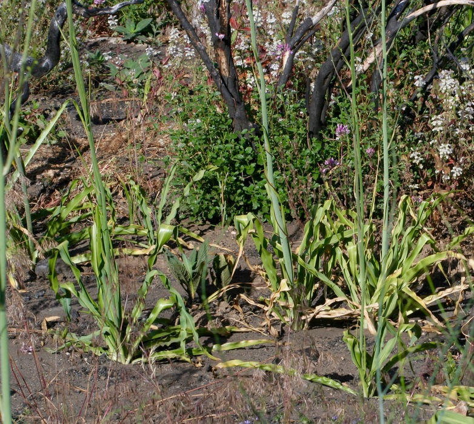
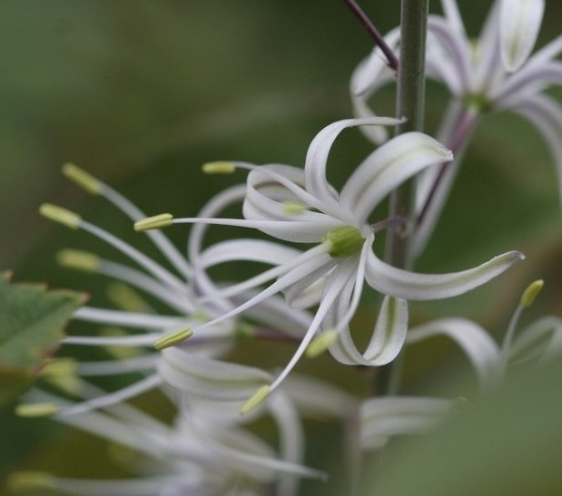

Hoo
Soaproot (Chlorogalum pomeridianum)
- Hoo is used to make soap, medicine, and utensils such as a soaproot brush.
- When roasted or boiled, hoo produces a substance than can be used as a glue.
- Hoo can be used as part of a mixture to stun fish in shallow pools of water.
- When heated and placed on the skin, hoo can be used to heal cuts/wounds.

Soaproot (photo by Kim Cabrera, CC BY-NC-ND 3.0)

Soaproot (photo by Steven Thorsted, CC BY-NC 3.0)

❮
❯
Soaproot (photo by Steven Thorsted, CC BY-NC 3.0)
- Hoo often grows near c’ítok’ (poison oak). It can be used as a poultice to treat poison oak rash and other pains.
Homodíbe mɨɨm? (Where is it?) You can find hoo growing near the Ed Center Garden and in other places around the Rancheria.
Esak’ahá daak’ábe mi c’aykɨ́ɨ? (Do you want to know more?) This webpage is part of a larger initiative to share signage highlighting plants found around the Shingle Springs Rancheria and their Nisenan names.
Webpage last updated: 2025-07-15